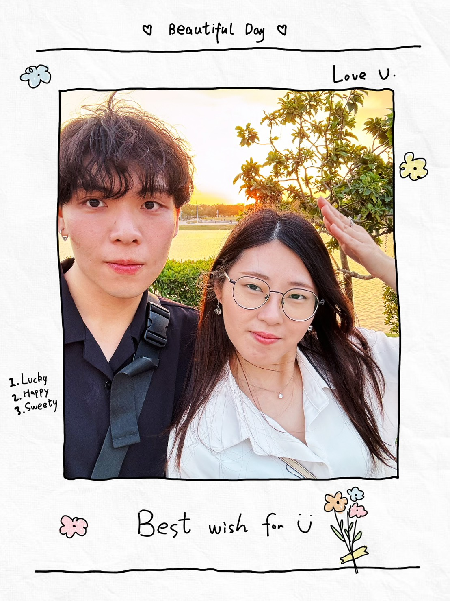
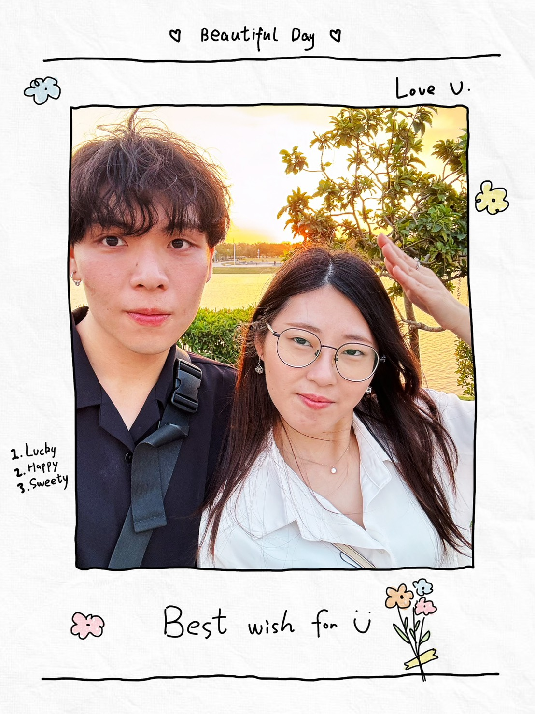

在皎潔的月光下，禎禎偵探悄然潛入一座古老的教堂> 傳說中的怪盜瑋瑋，竟然在這裡現身
怪盜瑋瑋:「你以為我沒發現你嗎 ㄎㄎㄎㄎ🧐，想抓到我妳還早了呢~」
「想找到我從✨路易十五世✨盜竊的寶物，前提是~如果你能解開這個線索!!
「妳是本月的主角，想要得到屬與你的寶藏就往前看吧!! 哈哈哈哈」
在漆黑的夜晚，一朵烏雲遮住了月光⛈️，剎時!怪盜瑋瑋再次消失蹤影了
禎禎掃視四周——沒有腳印，沒有破壞，只有那幅奇異的畫作🖼️與一串莫名的字母：
「這不只是裝飾……這是線索！」她喃喃說道。